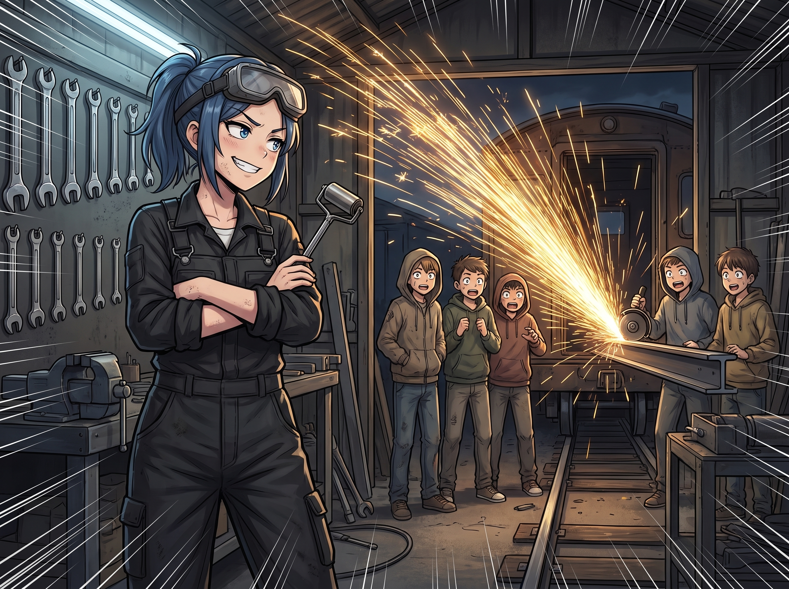
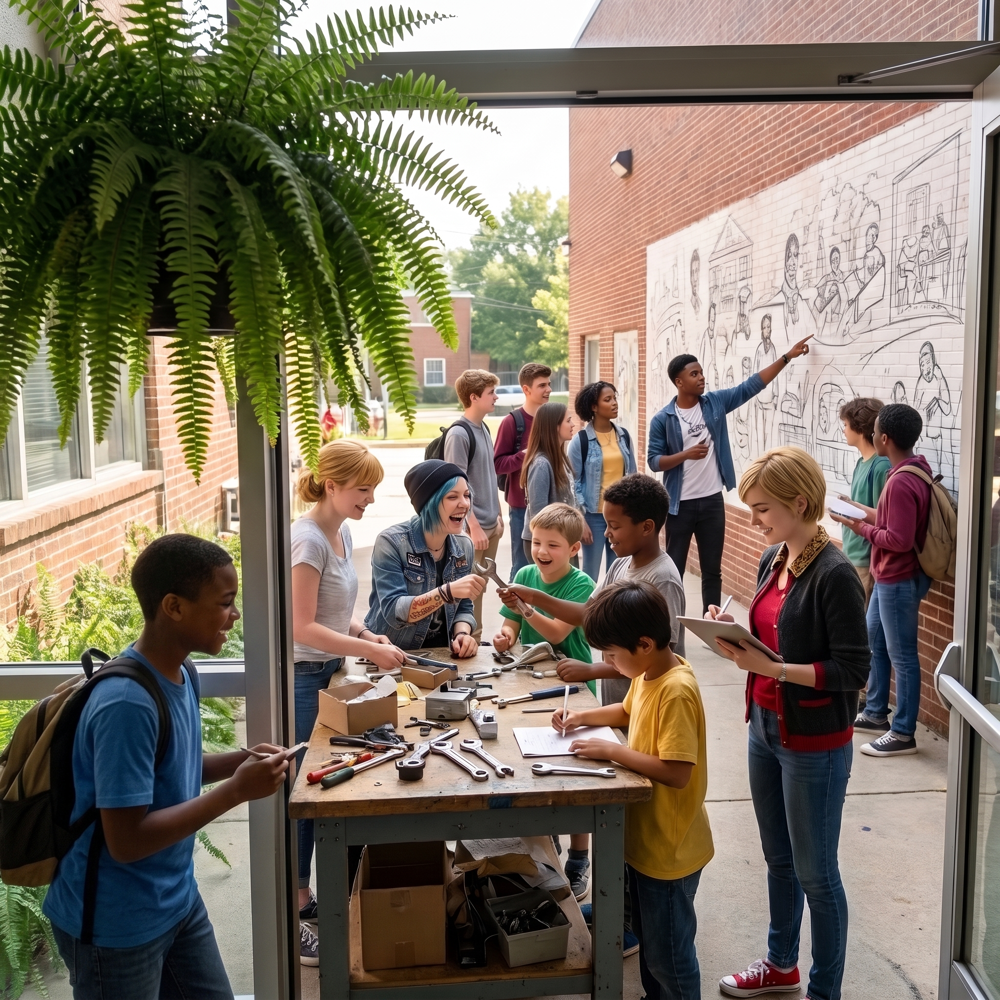

開課日


週三清晨八點半，波特蘭東區的舊鐵道花園沐浴在清透的初秋晨光中。
昨夜經歷過工業筋膜放鬆器的深層碾壓與草本精油滋潤，四個人的身體奇蹟般地滿血復活。雙腿不再僵硬，腰背舒展如新，整座工坊散發著蓄勢待發的蓬勃生機。
二號貨運車廂的兩扇實木滑門被推至最大。門口兩側的波士頓腎蕨在晨風中輕輕搖曳，迷迭香的清冽香氣混著乾淨的金屬冷卻油氣味，迎來了「Price & Chase 青年機械教室」的第一批正式學員——五名由社區中心與基金會共同選拔、眼神中帶著拘謹與好奇的邊緣青少年。
一、開場震撼：破除戒備的第一道火花
孩子們穿著寬鬆的舊衛衣，手插在口袋裡，有些侷促地站在入口處打量著這座充滿硬核秩序感的車廂。
站在最前方的 Chloe 已經換上了整潔的黑色重型工裝吊帶褲，藍色碎髮乾淨俐落地紮在腦後，防塵護目鏡卡在額前。她雙手抱胸，背後是整整齊齊掛滿了鍍鉻扳手與管鉗的黑色冷軋鋼工具牆。
「歡迎來到全波特蘭最酷的地下重型避難所。」Chloe 嘴角勾起一抹帶著挑釁與狂野的壞笑，隨手抓起手邊那根工業筋膜滾筒，在掌心轉了半圈，「記住三條規矩：第一，在這裡沒人關心你們在學校被記過幾次大過；第二，護目鏡焊在臉上，長袖紮緊；第三——」
Chloe 猛地拉下防護面罩，單手按下角磨機開關！
高速旋轉的砂輪狠狠切上一截報廢鋼軌，瀑布般的耀眼金色火花在車廂中央轟然綻放，瞬間映亮了五個少年驚愕而興奮的眼眸。
「第三，只要進了這扇門，你們手裡的工具就不是用來破壞世界的，是用來把屬於你們自己的零件親手造出來的！」Chloe 關掉角磨機，吹開護目鏡上的火星，大聲宣告。
原本冷漠防備的少年們，眼神裡的火苗在這一瞬間被徹底點燃。
二、雙軌實訓
實訓迅速按分組展開，四人導師團展現出極致流暢的教學節奏。
Chloe 與剛升任「助教」的 Miles 帶領三名少年圍在德產金屬車床前。Miles 熟練地示範如何校準三爪卡盤與游標卡尺，而 Chloe 則站在少年身後，一手扶著他們的肩膀引導進刀手感。當第一根粗糙的黃銅棒在少年手中切削出如絲綢般光滑的同心圓時，那名平時最沉默的男孩忍不住發出了低低的驚呼。
車廂採光最好的東側長桌前，Max 戴著黑框眼鏡，耐心地教另外兩名對繪畫感興趣的學員拆解一台老式相機的快門齒輪。她手把手教孩子們用鐘錶螺絲刀感受彈簧的微弱阻尼：「不要害怕零件太小，只要你的手夠穩，時間就會被你重新修好。」
Victoria 穿著一絲不苟的淺灰色西裝套裝，手持 iPad 在中央兩米寬的通道上來回踱步：「工具使用完畢三秒內歸位至磁吸條。保持專注，先生們，你們製造的公差會直接反映在未來的售價上。」
Kate 提著大號黃銅保溫壺，在各個工位間輕巧穿梭，為每位汗流浹背的孩子遞上冰鎮蜂蜜薄荷茶與剛烤好的無花果小餅乾：「累了就深呼吸一下，聞聞窗邊的迷迭香哦。」
三、奇蹟的午間定格
到了中午十二點，下課鈴聲被點唱機裡流淌出的輕快爵士樂取代。
長木桌上整齊擺放著五份學員們親手製作的「第一課成果」——三枚光滑平整的黃銅防塵軸承蓋，以及兩套被重新清洗上油、快門聲清脆如初的老相機光圈組件。
五個滿臉蹭著黑灰和機油的年輕人，圍著剛出爐的熱烤披薩狼吞虎嚥，眼底不再有剛進門時的迷茫與戾氣，取而代之的是親手創造出精準物件後的自豪與安穩。
Max 退到入口處的波士頓腎蕨後方，舉起大畫幅相機，將光圈調至 f/11。
「咔嚓。」
取景框裡，Chloe 坐在工作台上和孩子們比拼扳手技巧，Victoria 難得露出滿意的淺笑在 iPad 上給他們打下「合格」標籤，Kate 遞著乾淨毛巾，而 Miles 則驕傲地指著外牆的壁畫草稿向同齡人講解。
陽光穿透二號車廂的高側窗，在這片由四個女孩親手搭建的鋼鐵方舟裡，希望的齒輪伴隨著晨光與火花，正式開始了永不停歇的轟鳴運轉。